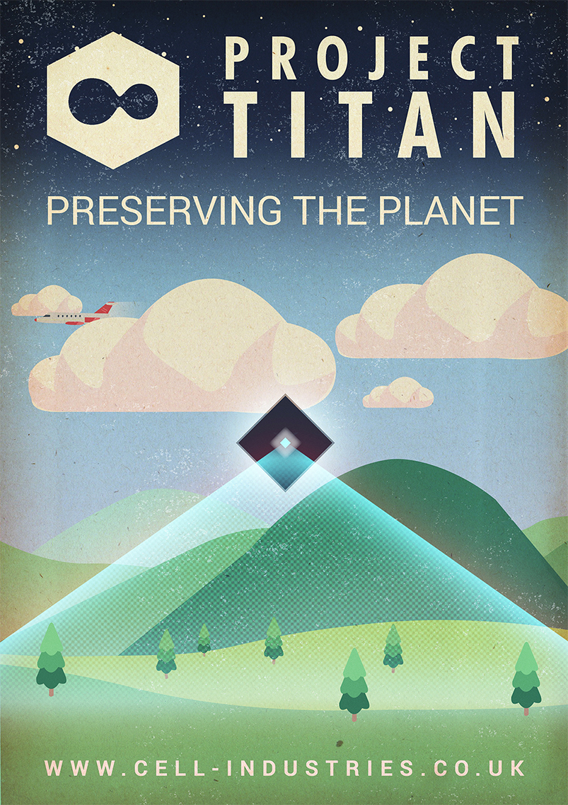
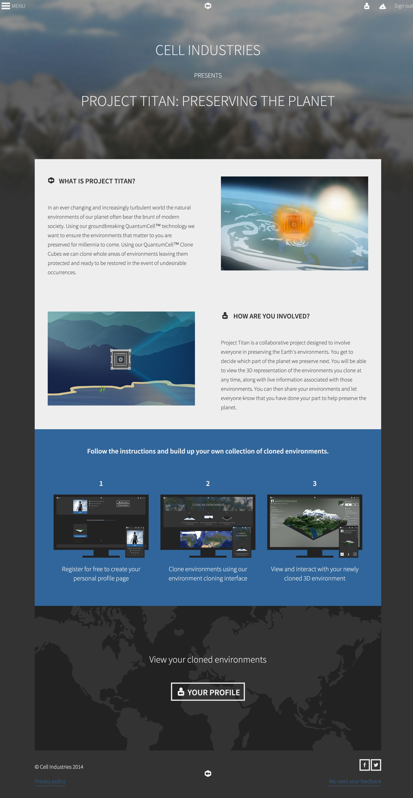
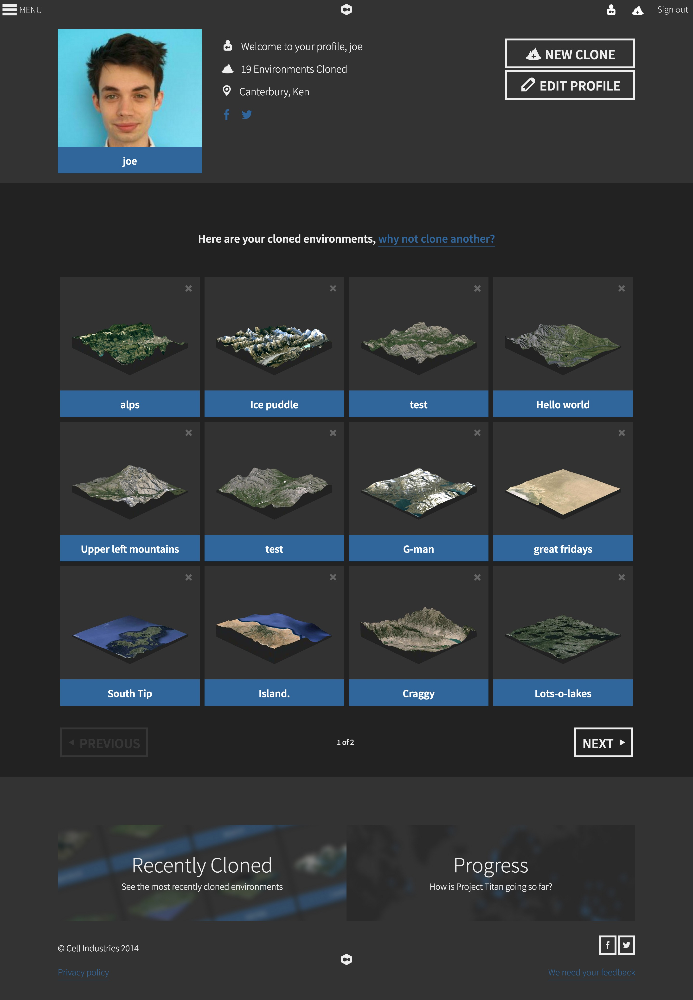

Cell Industries
DESCRIPTION —
Cell Industries was created as my Final Year Project at the University of Kent with James Alexander Lee and Jacob Hammond.
We wanted to use the latest web technologies and industry practices to create a unique web experience involving 3D visuals. We created a fictional company (Cell Industries) to achieve this and to further our own knowledge of web development.
ROLE —
Designer and front-end developer
DATE —
2014


The key feature was the 'cloning process'. By combining Google Elevation API, Google Static Maps API and ThreeJS, we automatically generate and display 3D topographical representations of real-world areas using only code.
